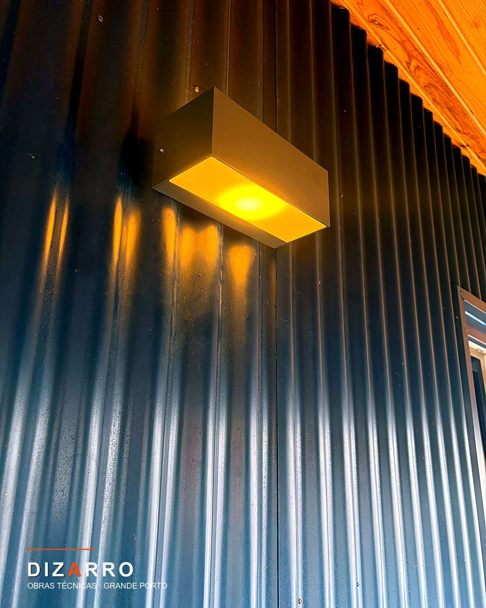
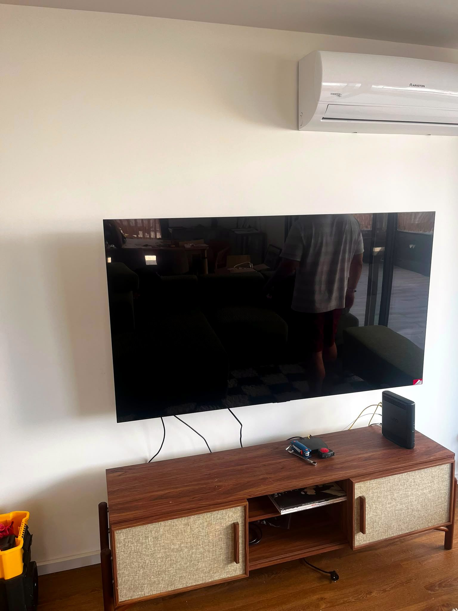
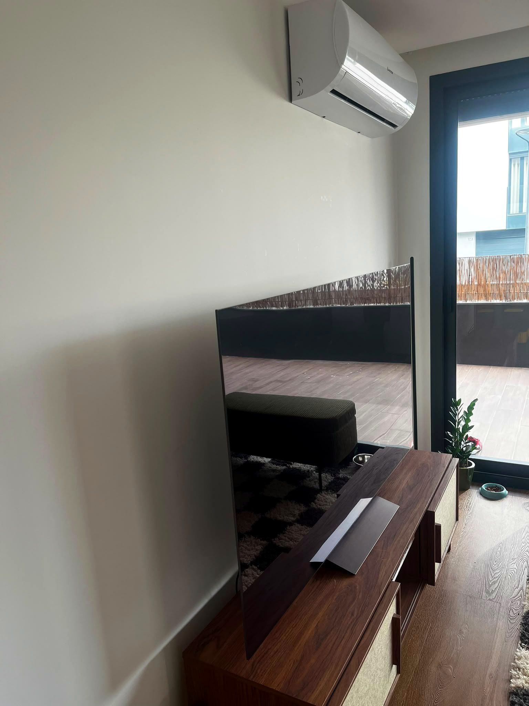
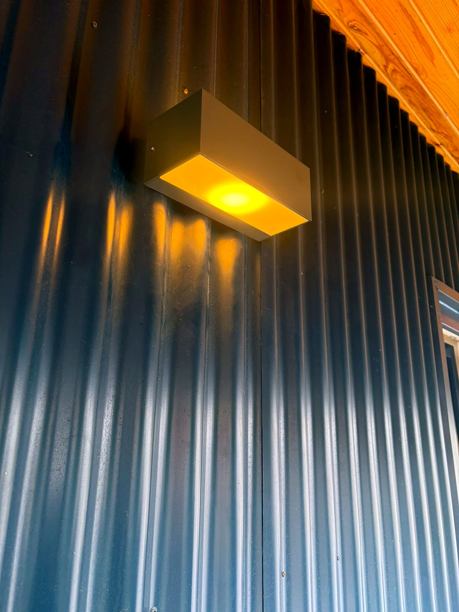
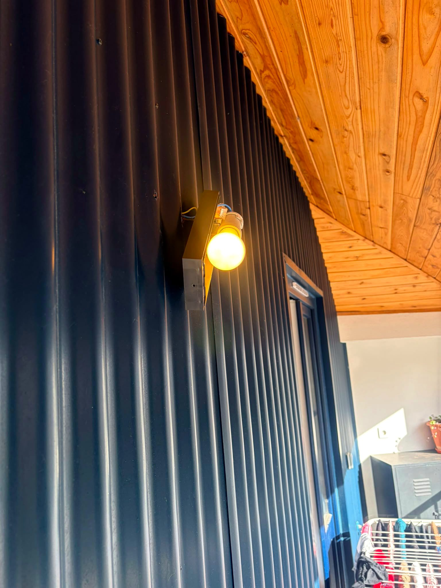
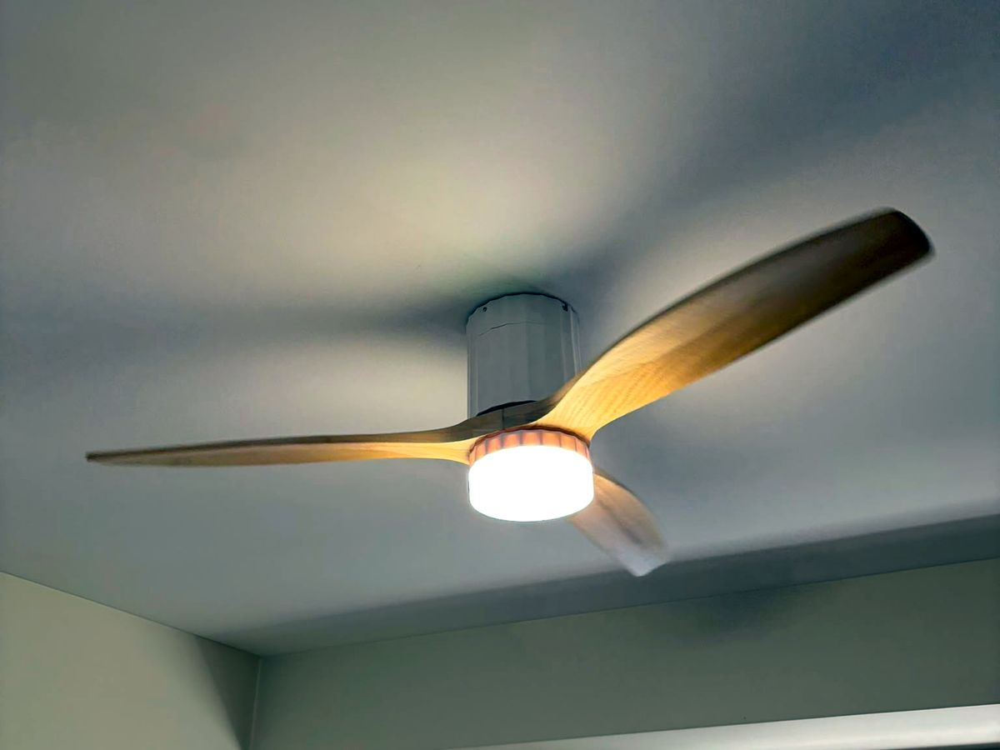
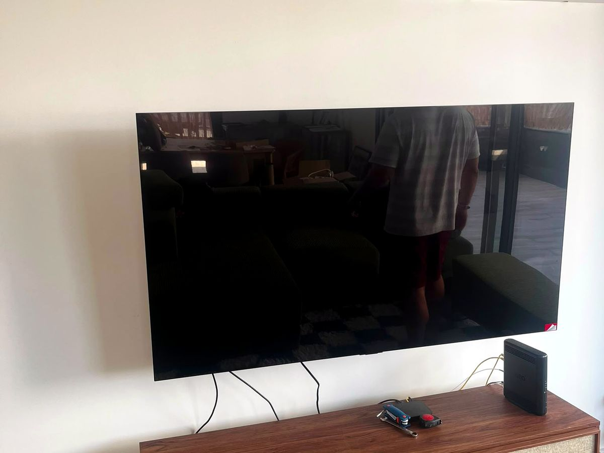

Da luz à madeira, fica bem feito.
Trocar uma tomada, montar um móvel ou uma prateleira, passar um cabo, montar um exaustor, pintar uma janela — pequenos trabalhos, bem feitos, com um só interlocutor. Resposta em menos de 24 horas.

O que fazemos
Pequenos trabalhos do dia a dia, bem feitos: uma tomada, uma prateleira, um cabo, um exaustor, uma janela para pintar. Um só contacto para tudo.
Eletricidade
- Troca de tomadas e interruptores
- Troca de luminárias e candeeiros
- Substituição de disjuntores
- Pequenos arranjos (sem quadros nem instalações novas)
Redes, Wi-Fi & Sites
- Passagem de cabos de internet e de TV
- Otimização do Wi-Fi
- Montagem e ligação de televisões
- Criação de sites simples (como este)
Carpintaria
- Montagem de móveis e prateleiras
- Reparação de madeira e troca de dobradiças
- Pequenos recortes e ajustes
- Exaustores: montagem e verificação de avarias
Pinturas
- Pintar móveis
- Pintar janelas e caixilharia
- De castanho para branco
- Pequenos retoques
Pedir orçamento é rápido
Sem formulários intermináveis. Diga o que precisa, respondemos em menos de 24 horas úteis, e o orçamento é gratuito e sem compromisso.
Conta-nos
Uma mensagem por WhatsApp ou uma chamada. Fotos ajudam, mas não são obrigatórias.
Vistoria
Se o trabalho justificar, marcamos uma visita técnica para medir e perceber o contexto.
Proposta clara
Recebe um preço claro antes de começarmos — materiais, mão de obra e prazo. Sem surpresas na fatura.
Trabalhos recentes
Trabalhos reais da Dizarro na região do Porto. Ver todos os trabalhos →


Antes & depois
Arraste o cursor para comparar. Trabalhos reais, sem montagens.
Janelas · de castanho para branco


Televisão · do móvel para a parede


Aplique de parede · fios à vista → acabado


Sala · prateleiras fixadas na parede


Mais trabalhos




Onde trabalhamos
Trabalhamos no local do cliente: cerca de 90% dos trabalhos fazem-se em casa de quem nos chama. Deslocamo-nos num raio de cerca de 100 km do Porto — toda a Área Metropolitana, mais Braga e Aveiro.
- Atendimento No local do cliente (≈ 90% dos trabalhos)
- Espaço ainda sem espaço aberto ao público
- Raio ≈ 100 km do Porto (Porto · Braga · Aveiro)
O que dizem os clientes
★★★★★Profissional e muito rápido. Veio no mesmo dia trocar a iluminação e ainda me ajudou a configurar tudo no Apple Home. Recomendo a toda a gente.
Nik V. — Vila do Conde · Eletricidade
★★★★★Educado, transparente e rápido. Trocou todos os cabos de TV antigos dentro da parede por cabo de rede para todas as divisões. Recomendo muito.
Eduardo D. — Aveiro · Telecomunicações
★★★★★Percebeu o problema num instante e trouxe todo o material. No fim disse que era só ligar se algo não ficasse bem. Profissionais assim são raros.
Frederico S. — Vila do Conde · Carpintaria
Perguntas frequentes
O orçamento tem algum custo?
Não. É gratuito e sem compromisso, seja pelo WhatsApp, e-mail ou numa visita técnica quando o trabalho justifica.
Dão garantia?
Sim. Em regra, 6 a 12 meses conforme o trabalho. Se algo não ficar bem dentro do prazo, voltamos sem custo.
Fazem trabalhos grandes?
Não. Fazemos pequenos trabalhos para casas e pequenos espaços: trocar uma tomada, montar um móvel, passar um cabo, pintar uma janela. Se o trabalho for maior do que isso, dizemos-lhe logo.
Como posso pagar?
Transferência bancária, MB Way e numerário, no fim do trabalho.